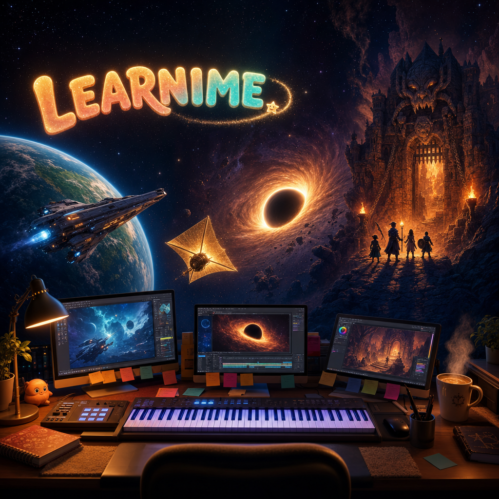
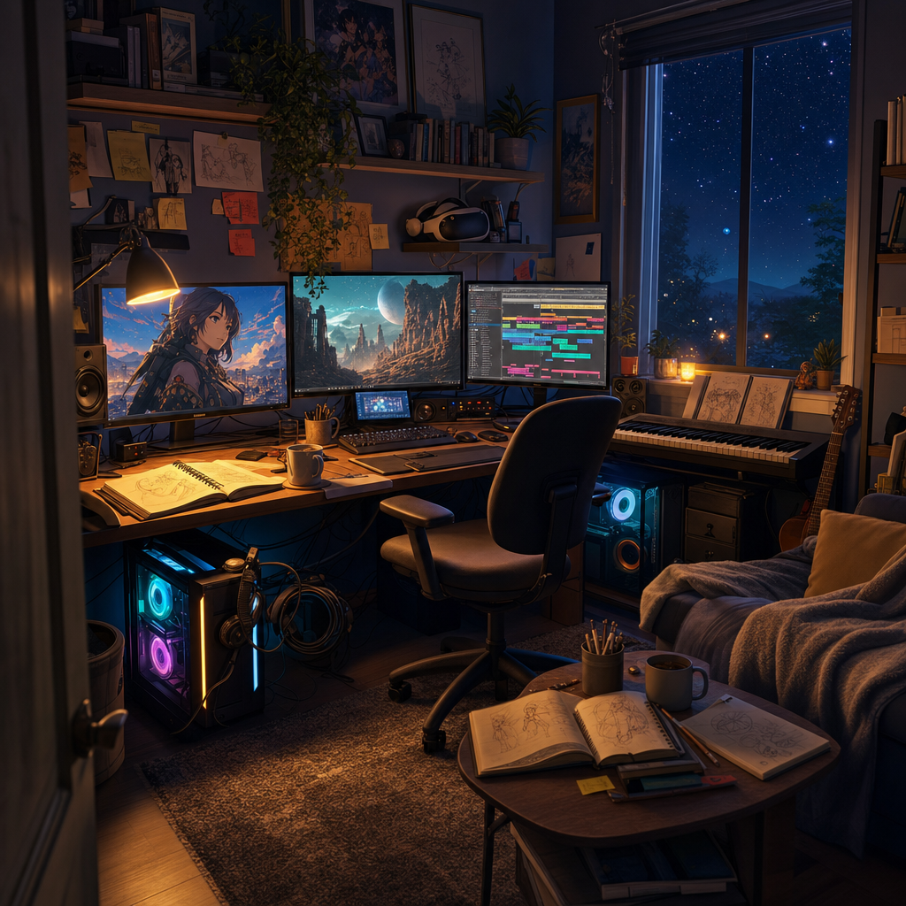
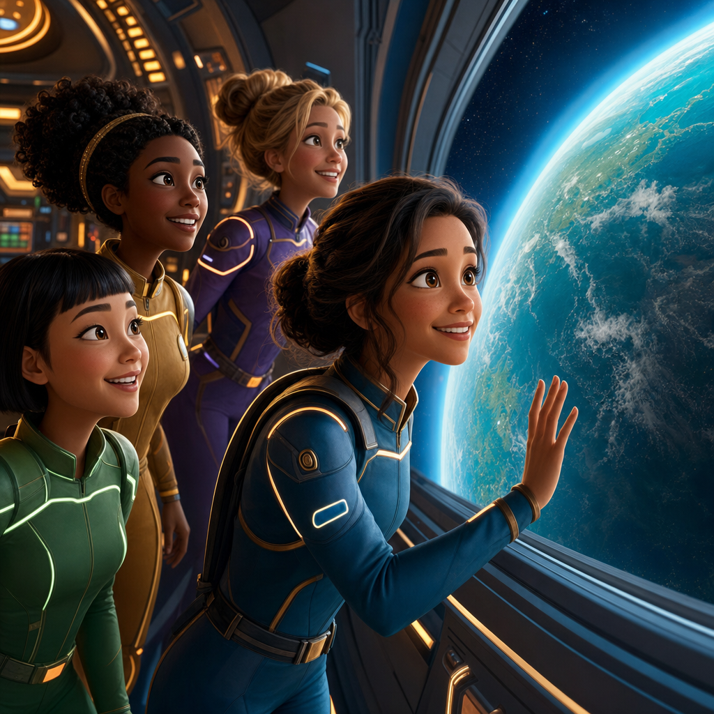
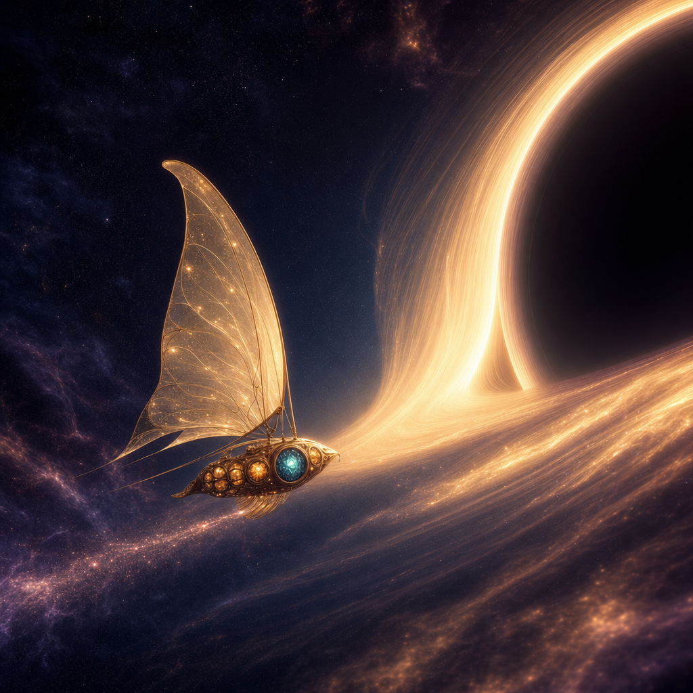
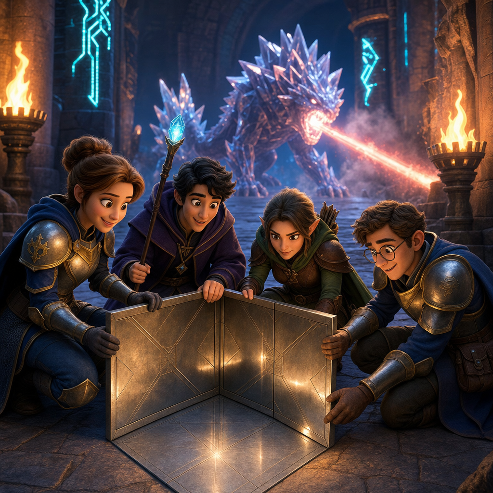
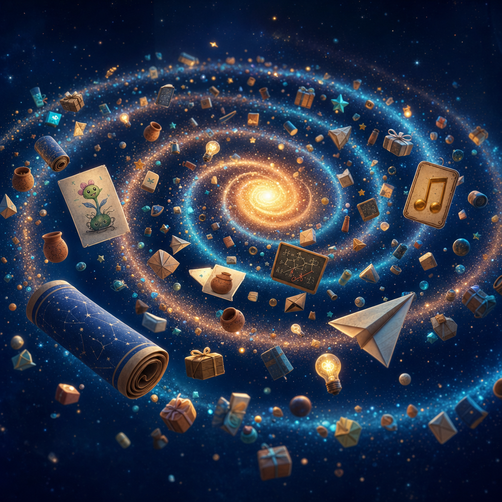

VIBE-ANIME 🌌
Anyone can make anime now. Yes — you.
You do not need a studio, a film degree, or money. You can begin at home, with what you already have. You can learn one small step. You can share what you discover. And if thousands of people each bring one picture, one fact, one musical phrase, or one good correction — we can build whole universes together.
Like Wikipedia — but for anime. One contribution at a time. ✨
You do not need to know AI, drawing, music theory, or GitHub. Curiosity is enough to enter. 💖

Anime is no longer a locked castle. 🏰➡️🏡
VIBE-ANIME is a simple, joyful idea: ordinary people can now create real animated stories at home. The AI tools can draw characters, build distant worlds, design voices, and help arrange music. Humans still decide what matters: the story, the feeling, the joke, the question, and the reason a scene deserves to exist.
And here is the beautiful part: every single step has a free road. Free apps teach you piano on your phone screen. Free sample libraries give you the instruments of an orchestra. One ordinary home computer can draw the worlds. Free local AI models can be your assistant. Each person uses the best tools they have — the real tools are human creativity and the desire to make something beautiful.
We tell hard science-fiction and hard-fantasy stories that secretly teach real astronomy, history, physics, chemistry, biology, and math — without ever feeling like homework. And everything we learn is shared publicly, so the next beginner never starts from zero.

"If Nir can do it, anybody can." 💖
This adventure started with Nir — an inventor from Israel who has ADD, and who began as a complete beginner with Linux, computers, and AI. At first, even ordinary technical steps felt like wandering through a maze with the lights off. So he learned one tiny thing. Then another. Then he wrote down what worked — publicly, so you can copy it.
Nir's story is not that everything became easy. It is that complicated things can be divided into small, learnable pieces — and those pieces can be shared.
You do not have to be Nir. You only have to begin where you are.
Choose a doorway ✨
Three series, different in story, equal in importance — all built with the same home pipelines.

🚀 Alpha Babes
Hard sci-fi · 5 seasons planned
A young international crew, led by Madie, flies a spaceship between real exoplanets scientists believe may support life. Every mission hides real astronomy, physics, chemistry, biology, or math inside the action. Later, entire space battles become laser chess in three dimensions.
Explore Alpha Babes 🚀
🦋 Cosmic Chrysalis
Hard sci-fi
A rogue AI may end humanity. Tiny light-sail arks are launched toward the galaxy's central black hole, scattering in directions no hunter can predict. Each ark carries the seeds of Earth — and one sealed AI asked to become better than the intelligence that destroyed us. Across the stars, ancient civilizations are born again.
Enter Cosmic Chrysalis 🦋
🗡️ Mazes & Mages
Hard fantasy · sword & sorcery
A D&D-spirited world where science is as useful as magic. A monster fires lasers? Build a corner reflector from metal floor tiles. The lesson is never beside the adventure — the lesson is how the heroes survive it.
Begin the Quest 🗡️Every episode has two hearts. 🎨🎻
The visual heart 🎨 — Anime characters are created at home with an
anime image model and small "character memory" files called
LoRAs
A LoRA is a small file that helps an image tool remember
one specific character — so she stays the same person from every angle, in every
light. 📖
The musical heart 🎻 — The score is classical music: public-domain
compositions, performed at home. Every main character receives a Romantic-era
leitmotif
A leitmotif is a short musical theme that belongs to one
character — whenever their feelings return, their melody returns too. 📖
Bring one tiny thing. Seriously. 🌱
You do not need to make a full episode. You do not need GitHub. You can send: one fascinating astronomy discovery 🔭 · one alien landscape you rendered 🌋 · one melody 🎻 · one historical detail 🏺 · one puzzle or monster idea 🐉 · one scientific correction 🔎 · one kind suggestion 💬
A tiny contribution can become a prop, a line of dialogue, a puzzle, a musical moment, or the seed of an entire episode. Small is not less important. Small is how shared worlds grow.

The door is open. 🚪🌌
Watch the stories grow. Learn how they are made. Borrow every recipe. Correct what is wrong. Add what is missing. Then make something we never imagined.
Welcome to VIBE-ANIME.